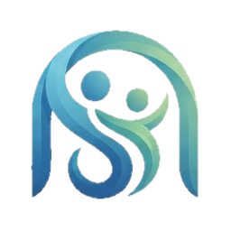

Seret untuk memutar, scroll atau cubit untuk zoom

Selamat pagi,
Ceritakan keluhan ringan kamu.
Konten bersifat edukasi umum dan bukan pengganti saran dokter.
Informasi umum untuk edukasi, bukan pengganti saran dokter. Untuk obat, baca label atau tanya apoteker. Darurat: hubungi 112 atau 119.
Setelah disimpan, AI memberi masukan singkat dari isianmu. Ini untuk refleksi diri dan bukan diagnosis atau pengganti psikolog. Isianmu diproses oleh Google Gemini, jadi jangan menulis data sensitif seperti nama lengkap atau alamat.
Lingkaran: suasana hati (1 buruk, 5 sangat baik). Batang: jam tidur. Angka bawah batang: jam tidur dan tingkat stres (S1 tenang sampai S5 sangat tinggi).